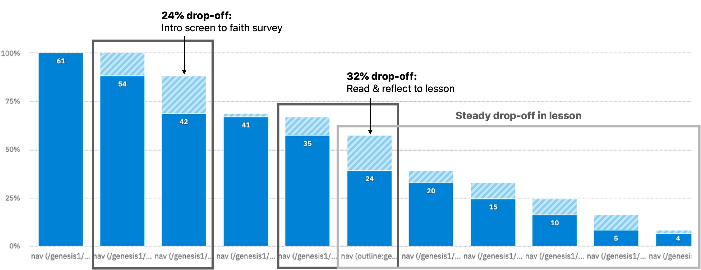
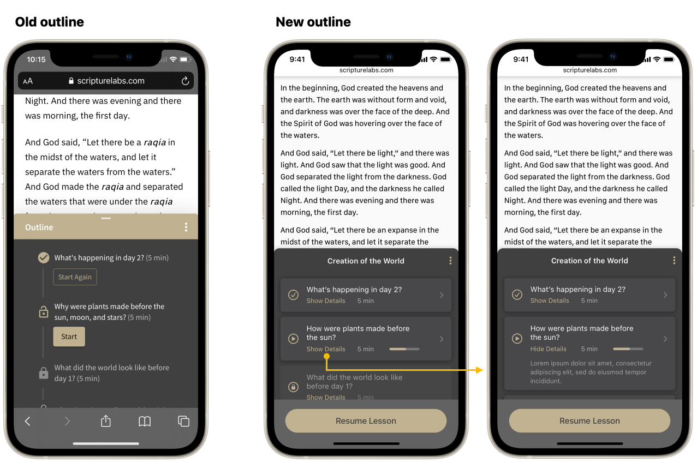
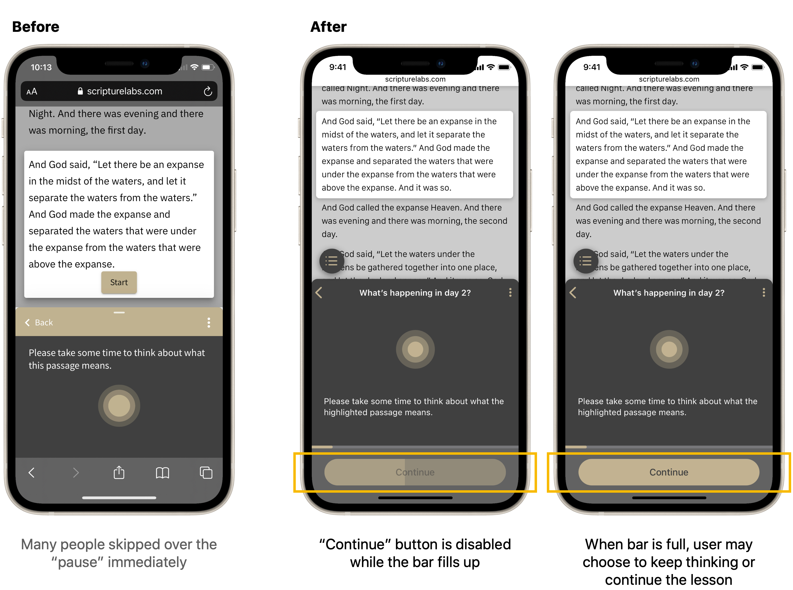
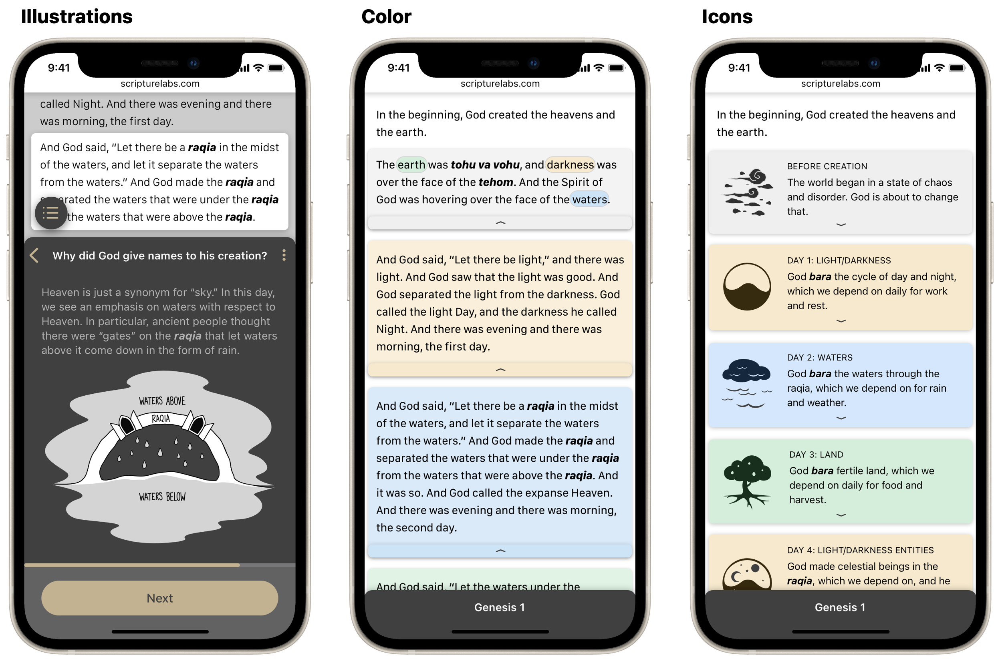
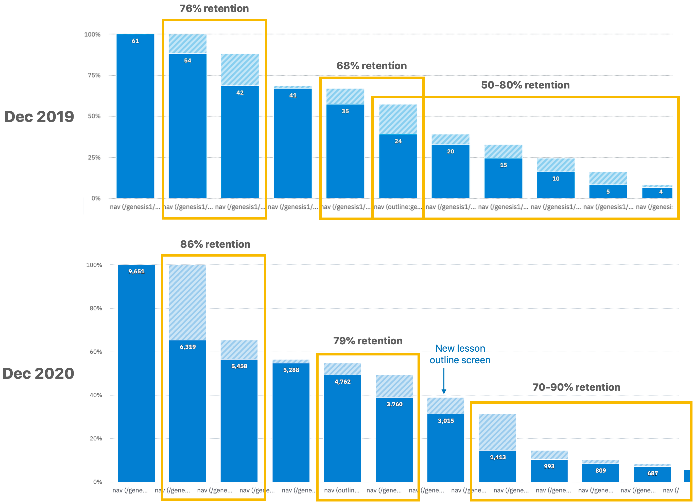
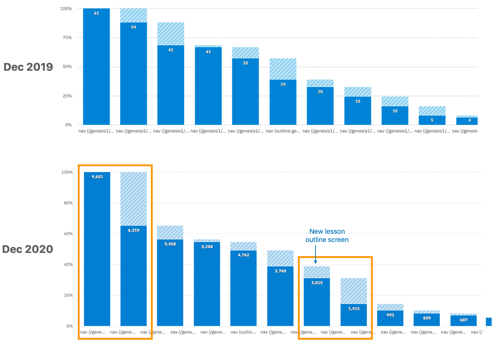

Improve the design of a digital learning tool to help increase user retention.
Designed a framework to improve cohesion, logic and usability. Frameworks will continue to grow and scale with the product.
My RolesResearch, UX, UI, design system
Team1 Developer, 1 Writer
Scripture Labs is a web-based interactive Bible study tool. It offers guided analysis, historical context and activities to teach users how to read and interpret the Bible.
At the time I joined, the product was in a beta release. It contained only 1 lesson, and had feedback from about 20 users.
The team had tracked engagement data on the beta release using Amplitude. We noted a couple of sharp drop-off points to investigate.
We also had verbal feedback from user tests and from SL's Facebook discussion page. Many of the comments were about the user interface and experience. Because the user pool was small, we were able to connect directly with many of them and ask about their experience in-depth.
I can't tell how long the lesson is, so I don't want to start and not finish.
Our research showed 3 main pain points causing engagement drop-off in our experience:
To address the pain points found, I identified 3 main focus areas. Under each focus area, I (and the team) brainstormed a list of features that could improve that area:
Next, we sorted the tasks onto an effort/impact matrix. From this, we created our final task list, prioritizing high-impact, low-effort items.
The features would then be released on a rolling basis as they were built, in order of priority.
Below I've highlighted examples of the most impactful designs and system components we created.
The addition of a proper home page provides information about the product, the lesson experience, and—in a future state with more lessons—a place to display them.
Added to give students a sense of place and progress. This also incentivizes them to finish.
I added additional information to the outline, including summaries and expected completion time, so students could feel more prepared going in.
To help students more easily distinguish between text-based content, I identified 3 types of content and gave each a different visual treatment. These were:
A new framework helped bring cohesion to question interactions, reducing friction and incompletion.
I created built-in time for pause, aiming to help foster reflection and personal connection with the reading material. This timer design strikes a balance between encouraging participation and giving readers control.
I added color and images to parts of the lesson to help illustrate certain concepts.
I created components for the desktop and mobile version. This library will continue to be updated as the product scales.
The original drop-off points improved by over 10% retention—with the growth in scale, this shows an impact on hundreds of people. Furthermore, we saw fewer comments about the UI, while discussion around the content itself increased, which is desired.
We also saw increased drop-off at a couple points.
1. After the Home Screen: with a push in marketing in 2020, the site received many visits from non-target users.
2. After the lesson outline: this may be the result of adding an option to save progress here, creating a natural stopping point.
